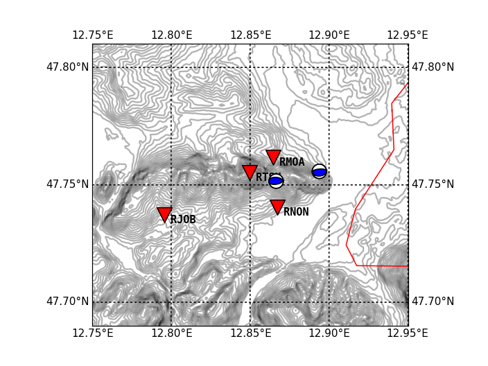
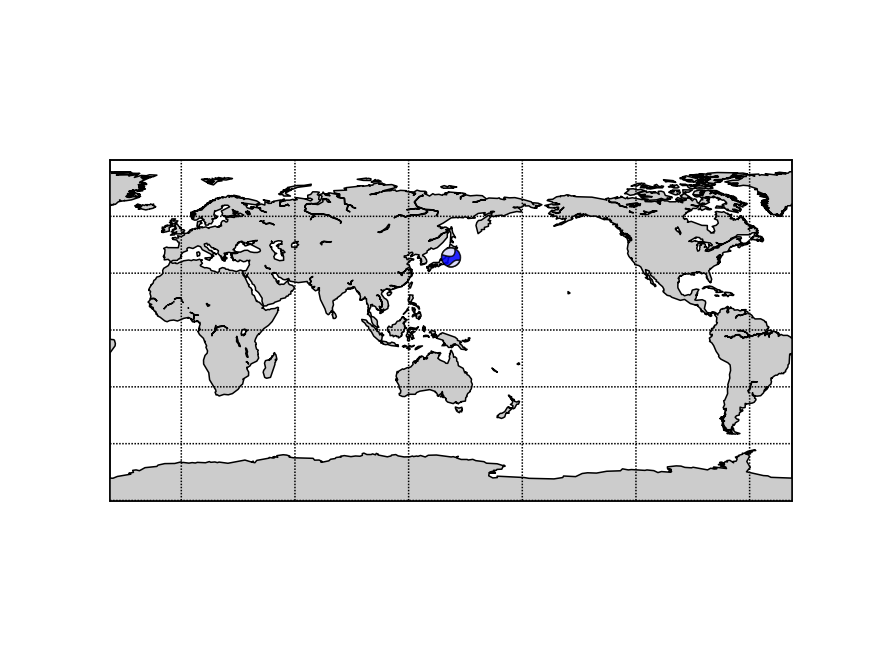

20. Basemap Plot with Beachballs¶
20.1. Basemap Plot of a Local Area¶
The following example shows how to plot beachballs into a basemap plot together with some stations. The example requires the basemap package (download site) to be installed. The SRTM file used can be downloaded here. The first lines of our SRTM data file (from CGIAR) look like this:
ncols 400
nrows 200
xllcorner 12°40'E
yllcorner 47°40'N
xurcorner 13°00'E
yurcorner 47°50'N
cellsize 0.00083333333333333
NODATA_value -9999
682 681 685 690 691 689 678 670 675 680 681 679 675 671 674 680 679 679 675 671 668 664 659 660 656 655 662 666 660 659 659 658 ....
import gzip
import numpy as np
import matplotlib.pyplot as plt
from mpl_toolkits.basemap import Basemap
from obspy.imaging.beachball import beach
# read in topo data (on a regular lat/lon grid)
# (SRTM data from: http://srtm.csi.cgiar.org/)
with gzip.open("srtm_1240-1300E_4740-4750N.asc.gz") as fp:
srtm = np.loadtxt(fp, skiprows=8)
# origin of data grid as stated in SRTM data file header
# create arrays with all lon/lat values from min to max and
lats = np.linspace(47.8333, 47.6666, srtm.shape[0])
lons = np.linspace(12.6666, 13.0000, srtm.shape[1])
# create Basemap instance with Mercator projection
# we want a slightly smaller region than covered by our SRTM data
m = Basemap(projection='merc', lon_0=13, lat_0=48, resolution="h",
llcrnrlon=12.75, llcrnrlat=47.69, urcrnrlon=12.95, urcrnrlat=47.81)
# create grids and compute map projection coordinates for lon/lat grid
x, y = m(*np.meshgrid(lons, lats))
# Make contour plot
cs = m.contour(x, y, srtm, 40, colors="k", lw=0.5, alpha=0.3)
m.drawcountries(color="red", linewidth=1)
# Draw a lon/lat grid (20 lines for an interval of one degree)
m.drawparallels(np.linspace(47, 48, 21), labels=[1, 1, 0, 0], fmt="%.2f",
dashes=[2, 2])
m.drawmeridians(np.linspace(12, 13, 21), labels=[0, 0, 1, 1], fmt="%.2f",
dashes=[2, 2])
# Plot station positions and names into the map
# again we have to compute the projection of our lon/lat values
lats = [47.761659, 47.7405, 47.755100, 47.737167]
lons = [12.864466, 12.8671, 12.849660, 12.795714]
names = [" RMOA", " RNON", " RTSH", " RJOB"]
x, y = m(lons, lats)
m.scatter(x, y, 200, color="r", marker="v", edgecolor="k", zorder=3)
for i in range(len(names)):
plt.text(x[i], y[i], names[i], va="top", family="monospace", weight="bold")
# Add beachballs for two events
lats = [47.751602, 47.75577]
lons = [12.866492, 12.893850]
x, y = m(lons, lats)
# Two focal mechanisms for beachball routine, specified as [strike, dip, rake]
focmecs = [[80, 50, 80], [85, 30, 90]]
ax = plt.gca()
for i in range(len(focmecs)):
b = beach(focmecs[i], xy=(x[i], y[i]), width=1000, linewidth=1)
b.set_zorder(10)
ax.add_collection(b)
plt.show()
(Source code, png, hires.png)
{kind=link}
{kind=link}

Some notes:
The Python package GDAL allows you to directly read a GeoTiff into NumPy
ndarray>>> geo = gdal.Open("file.geotiff") >>> x = geo.ReadAsArray()
GeoTiff elevation data is available e.g. from ASTER
Shading/Illumination can be added. See the basemap example plotmap_shaded.py for more info.
20.2. Basemap Plot of the Globe¶
import numpy as np
import matplotlib.pyplot as plt
from mpl_toolkits.basemap import Basemap
from obspy.imaging.beachball import beach
m = Basemap(projection='cyl', lon_0=142.36929, lat_0=38.3215,
resolution='c')
m.drawcoastlines()
m.fillcontinents()
m.drawparallels(np.arange(-90., 120., 30.))
m.drawmeridians(np.arange(0., 420., 60.))
m.drawmapboundary()
x, y = m(142.36929, 38.3215)
focmecs = [0.136, -0.591, 0.455, -0.396, 0.046, -0.615]
ax = plt.gca()
b = beach(focmecs, xy=(x, y), width=10, linewidth=1, alpha=0.85)
b.set_zorder(10)
ax.add_collection(b)
plt.show()
(Source code, png, hires.png)
{kind=link}
{kind=link}
